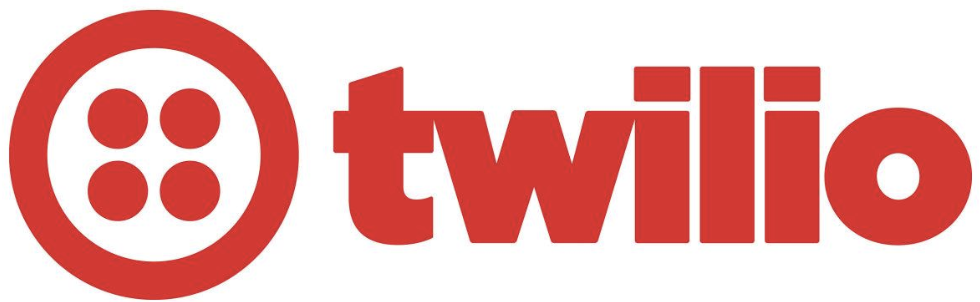
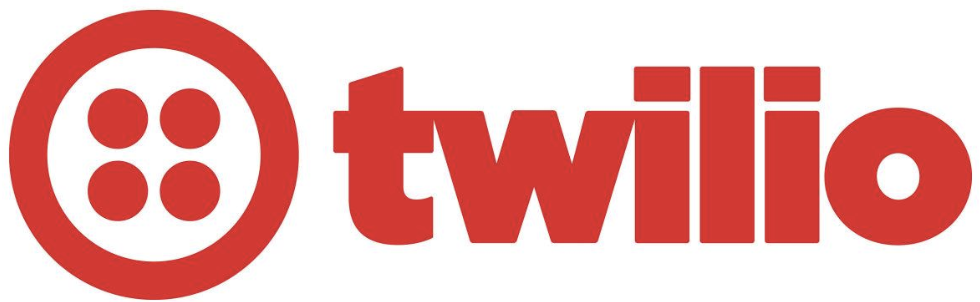
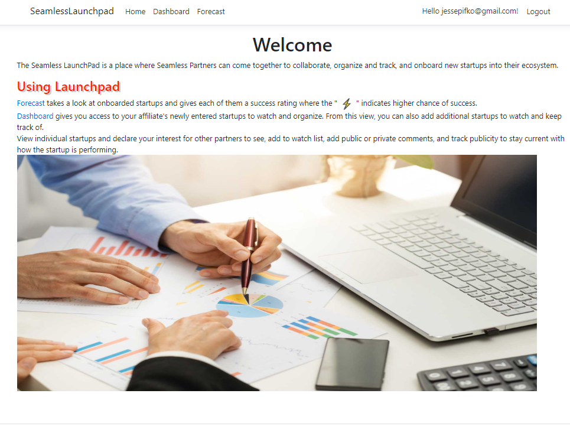
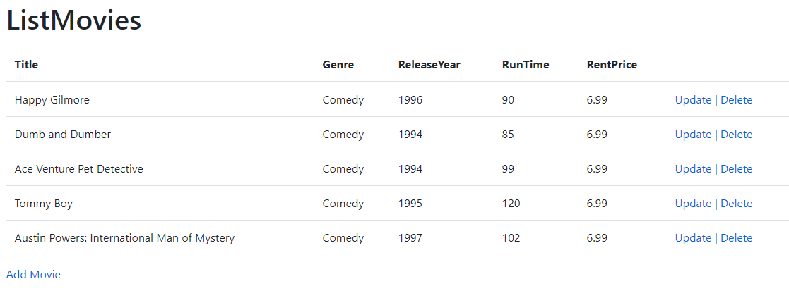
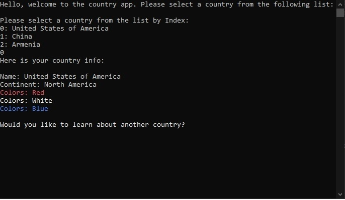

Ford Lincoln
Service Reservation + Program

Leading by example, the team on Production Support was responsible for defect investigations, capturing all details pertaining to unexpected software behavior in production and coordinating with cross-functional teams to support triage and resolution efforts with respect to Ford global SLAs.
 


Contributor of a functional prototype developed in the Google Workspace GAS environment.
Technologies used: NodeJs, Twilio API, Google Cloud Platform (GCP)

As acting Product Owner and Manager the team delivered a custom CRM proof of concept to business and their stakeholders.

I developed Proposo as an on-the-fly solution to generate proposals for salesmen in the field for the Home Security industry. Using Crime-o-Meter API the tool gave the salesperson real-time crime data in a given neighborhood to assist the sale.
Technologies used: JavaScript, Jquery, .NET Core, Crime-O-Meter API .

For this project I designed a themed website to the owners liking utilizing HTML, CSS, and Javascript. The website also featured a web based appointment booking system.

This was my final project at Grand Circus. We were given some live data to use and was tasked with creating a project around it. My group created a web app where you could collaborate, organize, and track newly added start ups to the database. We used Microsoft Azure to host the app in the cloud.
My greatest contribution to this project was an intelligent success predicting algorithm. The algorithm gathered metrics around different aspects of each business, calculated an average of those metrics, and would highlight those that ranked in the top 20%.

Using the MVC design pattern, this project contains a database that lets you Create, Read, Update, and Delete from within the web app.

Music Database uses the Deezer API to access its database, save favorites, listen to a .30 second preview of songs, and browse albums by artist.
I worked in a group for this project, and contributed the app's favorites section.

Database diagrammed and built using SSMS queries.

Simple console app that demonstrates decision logic and object properties based on user feedback.
{kind=link}
{kind=link}
{kind=link}